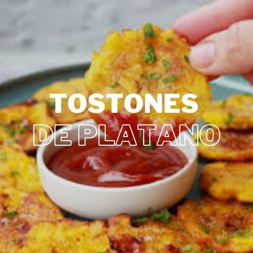

Ingredientes
- 2 plátanos verdes
- 1 aguacate maduro
- 1 tomate, picado
- 1/4 de cebolla roja, picada
- Jugo de 1/2 limón
- Sal y cilantro al gusto
- 1 cucharada de aceite de coco
Instrucciones
- Pela y corta los plátanos en rodajas gruesas.
- Fríe las rodajas en aceite de coco hasta que estén doradas y aplánalas ligeramente.
- Vuelve a freír por 1-2 minutos hasta que estén crujientes.
- Prepara el guacamole triturando el aguacate y mezclando con tomate, cebolla, jugo de limón, sal y cilantro.
- Sirve los tostones con una porción de guacamole.
Información Nutricional
| Calorías | 250 kcal |
|---|---|
| Proteínas | 3g |
| Grasas | 12g |
| Carbohidratos | 34g |
| Fibra | 6g |